studyai.cn
网站主页
站长风采
赞助我们
机器学习主页
聚类分析案例学习
聚类分析案例：共有24个。
MeanShift聚类
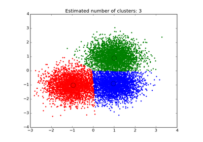
特征合并
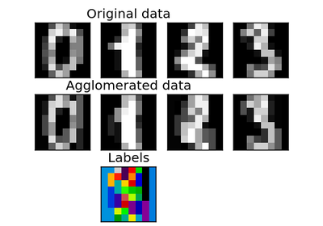
相似传播聚类算法
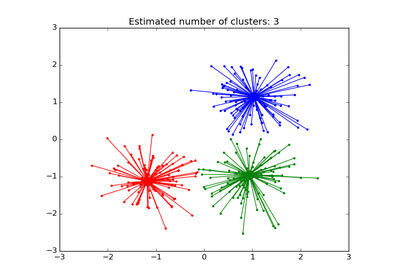
k-均值假设的论证
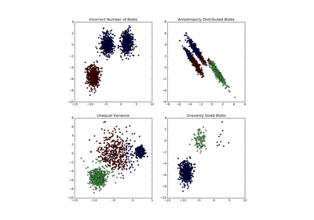
合并聚类算法
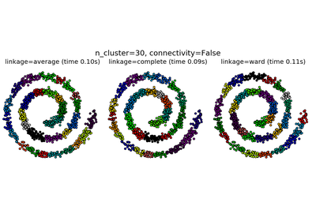
DBSCAN聚类算法
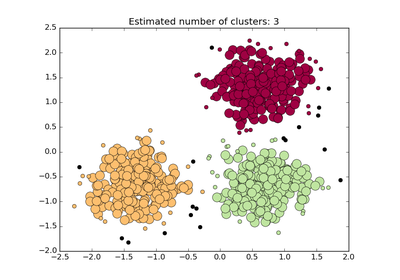
部分人脸字典的在线学习
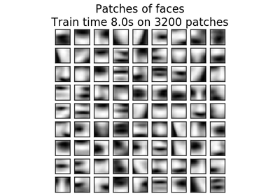
结构化Ward层次聚类法
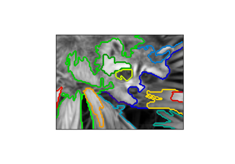
谱聚类图像分割
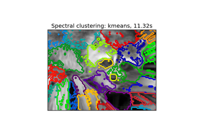
层次聚类:有结构与无结构
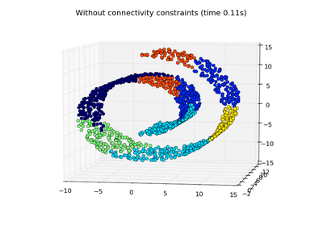
谱聚类用于图像分割
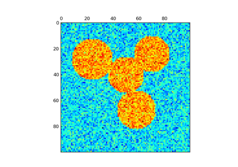
K均值聚类算法
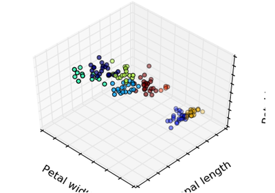
各种各样的合并聚类算法
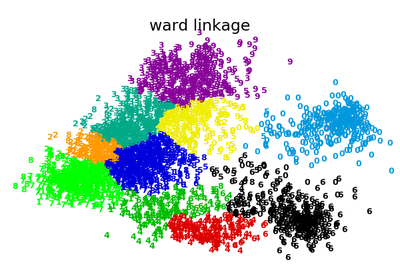
K均值色彩量化
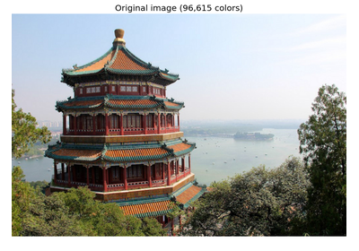
矢量量化的例子
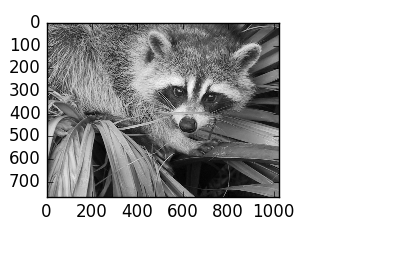
BIRCH 和 MiniBatchKMeans
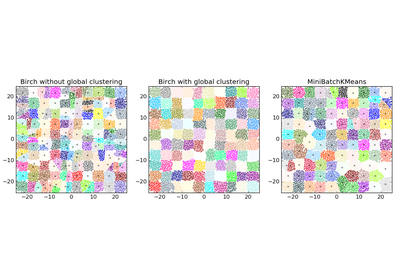
特征合并 VS 单变量选择
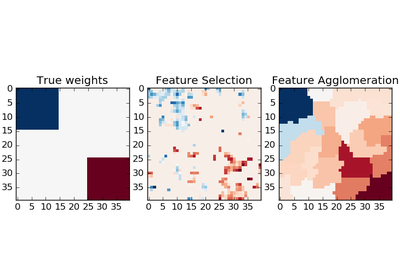
使用不同的测度合并聚类
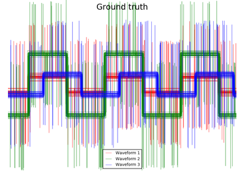
K均值初始化的经验评估
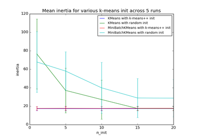
手写字符的K均值聚类
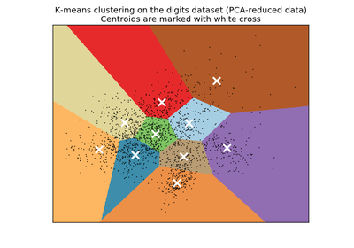
聚类性能评估之调正机会
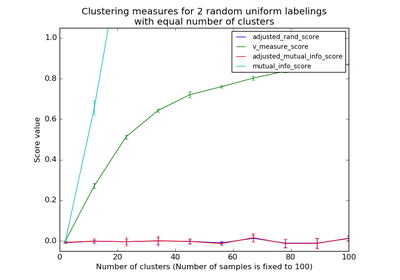
Tony上比较不同的聚类算法
K均值 VS. MinBatch-K均值
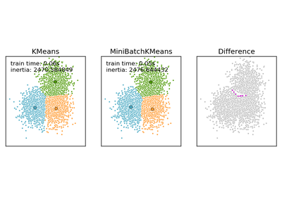
选择K均值聚类的聚类数量
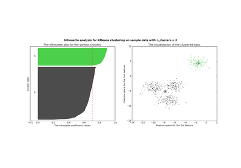